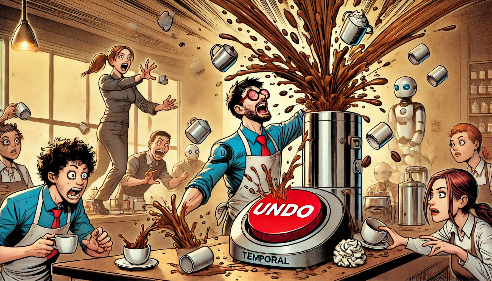

Implementing Saga Pattern with Temporal in Go Microservices: Journey Through Distributed Transactions
- 🏷 Concurrency
- 🏷 microservices
- 🏷 saga pattern
- 🏷 golang

Picture this: You’re standing in line at your favorite coffee shop. You order a complex drink (let’s call it the “Distributed Mocha Supreme”), and the barista starts a carefully choreographed dance between the espresso machine, milk steamer, and various syrup stations. Everything’s going great until—oops!—they’re out of whipped cream. Now what? Do they throw away everything they’ve made so far? Ask you to pay for a half-finished drink? Call over three managers for approval? Welcome to the world of distributed transactions in microservices!
The Distributed Transaction Problem: When ACID Turns Sour
Remember the good old days when all our data lived in one big, happy database? Life was simple then. Your transaction either succeeded completely or failed gracefully, thanks to our friend ACID (Atomicity, Consistency, Isolation, Durability). It was like having a safety net under your high-wire database act.
But then microservices came along, and suddenly we’re not just juggling balls—we’re juggling chainsaws, while riding a unicycle, in a hurricane. Each microservice has its own database, its own logic, and its own opinion about what constitutes “done.” Trying to maintain ACID properties across these services is like trying to herd cats… who are all taking different routes to different destinations.
In my years of building microservices (including a capital structure management system that would make your head spin), I’ve seen countless attempts to solve this problem. Two-phase commits? Great in theory, but about as practical in the real world as expecting everyone to agree on tabs versus spaces. Distributed transactions? More like distributed headaches!
Enter the Saga Pattern: Breaking Down Complex Workflows Like a TV Series
This is where the Saga pattern swoops in like the superhero we need. Think of it as the “Marvel Cinematic Universe” of transaction patterns—a series of local transactions that work together to tell a bigger story. Each transaction is like an episode in your favorite TV series, complete with its own plot (transaction logic) and, most importantly, a “Previously on…” recap feature (compensation actions) in case things go wrong.
But implementing Sagas isn’t just about writing some code and hoping for the best. It’s about carefully choreographing a series of steps, each with its own undo button. It’s like playing chess, but all the pieces can move simultaneously, and some of them occasionally decide to take a coffee break.
Why Temporal is Your Trusty Sidekick in This Journey
Enter Temporal—the Robin to your Batman, the Samwise to your Frodo, the fmt.Println() to your debugging session. After spending years wrestling with various workflow engines and home-grown solutions, I can tell you that Temporal is a game-changer. It’s like having a time machine for your distributed transactions (minus the paradoxes and butterfly effects).
Temporal handles all the gnarly bits of distributed workflow management:
- State management? ✓
- Retry logic? ✓
- Error handling? ✓
- Making you look like a distributed systems wizard? Double ✓
I’ve used Temporal in production systems where a single workflow touched everything from document analysis to payment processing, and let me tell you—it’s not just another tool in your toolbox. It’s the power tool that makes all your other tools more effective.
In this article, we’re going to dive deep into implementing the Saga pattern with Temporal in Go. We’ll build something real, something you can actually use, and most importantly, something that won’t keep you up at night wondering if that one edge case is going to bring down your entire system.
We’ll explore everything from basic concepts to advanced patterns, and I’ll share real battle stories from the trenches. By the end, you’ll have a solid understanding of not just how to implement Sagas with Temporal, but when and why you should use them.
So grab your favorite debugging beverage, fire up your IDE, and let’s embark on this distributed transaction adventure together. Trust me—by the time we’re done, you’ll be handling distributed transactions with the confidence of a superhero and the precision of a master chef.
Understanding Sagas: Think “Choose Your Own Adventure” Books
Remember those “Choose Your Own Adventure” books where one decision leads to another, and if things go wrong, you could always flip back to try a different path? That’s essentially what the Saga pattern is for your microservices—except instead of fighting dragons, you’re managing distributed transactions (though sometimes they feel equally epic).
Let’s break it down with a real-world scenario I encountered while building a capital structure management system. Imagine you’re processing a new financial investment:
- Validate investor credentials
- Check available investment slots
- Process payment
- Generate legal documents
- Update investor portfolio
- Send notifications
Each step is handled by a different microservice, and each needs to succeed or be properly compensated if something fails. It’s like a line of dominoes, but each domino needs to know how to stand itself back up if the line breaks.
Choreography vs. Orchestration: Dancing Solo or Having a Conductor?
There are two main ways to implement the Saga pattern, and choosing between them is like picking between freestyle dance and ballet:
Choreography: The Distributed Dance-Off
// Example of choreographed event flow
type InvestmentEvent struct {
InvestorID string
Amount decimal.Decimal
Status string
CompensateFor string
}
func (s *PaymentService) ProcessPayment(ctx context.Context, event InvestmentEvent) error {
// Process payment and emit next event
if err := s.processPayment(event); err != nil {
// Emit compensation event
return s.eventBus.Publish("investment.payment.failed", InvestmentEvent{
CompensateFor: "payment",
Status: "failed",
// ... other fields
})
}
// Success! Let the next service know
return s.eventBus.Publish("investment.payment.completed", event)
}
In choreography, each service is like a dancer who knows their routine and reacts to others’ moves. They communicate through events, like dancers responding to musical cues. It’s elegant when it works, but like a flash mob, it can get chaotic as complexity grows.
Orchestration: The Symphony Conductor
// Example of orchestrated workflow with Temporal
func (w *InvestmentWorkflow) Execute(ctx workflow.Context, input InvestmentInput) error {
// Define our saga steps
saga := workflow.NewSaga()
// Add compensation handlers
saga.AddCompensation(func(ctx workflow.Context) error {
return workflow.ExecuteActivity(ctx, w.RefundPayment)
})
// Execute steps with compensation handling
if err := workflow.ExecuteActivity(ctx, w.ProcessPayment).Get(ctx, nil); err != nil {
return saga.Compensate(ctx)
}
// Continue with other steps...
return nil
}
This is where Temporal shines like a spotlight on Broadway. It acts as your conductor, coordinating all the services and ensuring everyone plays their part at the right time. If something goes wrong, it knows exactly how to guide everyone back to harmony.
Compensation Actions: The “Ctrl+Z” of Distributed Systems
Here’s where things get interesting. Each step in your saga needs a compensation action—a way to undo what’s been done. It’s like having a save point in a video game, but for your business transactions.
Let’s look at some real compensation patterns I’ve implemented:
type CompensationAction struct {
Step string
Forward func(ctx workflow.Context) error
Backward func(ctx workflow.Context) error
}
func NewInvestmentSaga() *Saga {
return &Saga{
Actions: []CompensationAction{
{
Step: "ProcessPayment",
Forward: func(ctx workflow.Context) error {
// Process payment
return nil
},
Backward: func(ctx workflow.Context) error {
// Issue refund
return nil
},
},
{
Step: "GenerateDocuments",
Forward: func(ctx workflow.Context) error {
// Generate docs
return nil
},
Backward: func(ctx workflow.Context) error {
// Mark documents as void
return nil
},
},
// More steps...
},
}
}
But here’s the trick: compensation isn’t always as simple as “ctrl+z”. Sometimes you need to:
- Add a reversal transaction (like a refund)
- Leave a trace of what happened (for audit purposes)
- Take alternative actions (like sending an apology email)
- Handle the “compensation for the compensation” (yes, it gets that meta sometimes!)
The Real Magic: Temporal’s Role
This is where Temporal becomes your best friend. Remember that time machine analogy? Here’s how Temporal makes saga compensation actually workable:
func InvestmentWorkflow(ctx workflow.Context, input InvestmentInput) error {
options := workflow.ActivityOptions{
StartToCloseTimeout: time.Hour * 24,
RetryPolicy: &temporal.RetryPolicy{
InitialInterval: time.Second,
MaximumAttempts: 3,
BackoffCoefficient: 2.0,
},
}
ctx = workflow.WithActivityOptions(ctx, options)
// Saga implementation with Temporal's durable execution
saga := workflow.NewSaga()
// Each step is automatically tracked and can be compensated
for _, action := range investmentSteps {
saga.AddCompensation(action.Backward)
if err := workflow.ExecuteActivity(ctx, action.Forward).Get(ctx, nil); err != nil {
// Temporal handles the compensation orchestration
return saga.Compensate(ctx)
}
}
return nil
}
Temporal maintains the state of your entire saga, handles retries intelligently, and ensures that compensation actions are executed in the right order—even if your system crashes mid-compensation!
The Power of Pattern Recognition
The beauty of the Saga pattern with Temporal is that it turns complex distributed transactions into manageable, observable, and maintainable workflows. It’s like having a GPS for your distributed systems—you always know where you are, where you’re going, and how to get back if you take a wrong turn.
Enter Temporal: Your Distributed Systems Time Machine
Remember that scene in Doctor Strange where he uses the Time Stone to manipulate reality? That’s basically what Temporal does for your distributed systems, minus the glowing green special effects. But instead of reversing an apocalyptic event, you’re handling things like “Oops, the payment service is down” or “Help! The notification system is having an existential crisis.”
After implementing numerous workflow systems (and battling their quirks), I can tell you that Temporal is different. Here’s why:
// Traditional error handling - aka "Hope for the best"
func traditionalApproach() error {
if err := processPayment(); err != nil {
// What if the system crashes here? 🙈
// What if this retry loops forever? 🔄
// What if we need to pick up where we left off? 😱
return retryWithBackoff(processPayment)
}
return nil
}
// Temporal's approach - aka "I got this"
func TemporalWorkflow(ctx workflow.Context, input WorkflowInput) error {
// Temporal remembers EVERYTHING
options := workflow.ActivityOptions{
StartToCloseTimeout: time.Hour * 24,
RetryPolicy: &temporal.RetryPolicy{
InitialInterval: time.Second * 5,
MaximumInterval: time.Minute * 5,
BackoffCoefficient: 1.5,
MaximumAttempts: 5,
},
}
ctx = workflow.WithActivityOptions(ctx, options)
// Even if your entire data center catches fire,
// Temporal will resume right here when you're back
return workflow.ExecuteActivity(ctx, processPayment, input).Get(ctx, nil)
}
The Magic of Durable Execution
Let me tell you a story from my days building a capital structure management system. We had this complex workflow involving document analysis, payment processing, and multiple third-party integrations. Before Temporal, it was like trying to juggle while riding a unicycle on a tightrope. During a storm. At night.
Here’s what Temporal brought to the table:
func CapitalStructureWorkflow(ctx workflow.Context, input StructureInput) error {
// Define our workflow's "memory"
var state WorkflowState
err := workflow.SetQueryHandler(ctx, "getState", func() (WorkflowState, error) {
return state, nil
})
if err != nil {
return err
}
// Start our saga
saga := workflow.NewSaga()
// Document Analysis
var analysisResult DocumentAnalysis
if err := workflow.ExecuteActivity(ctx, AnalyzeDocuments, input.Documents).Get(ctx, &analysisResult); err != nil {
// Temporal remembers we failed here and will resume from this point
return handleError(ctx, err, "document_analysis")
}
state.AnalysisComplete = true
// Payment Processing
if err := workflow.ExecuteActivity(ctx, ProcessPayment, input.PaymentDetails).Get(ctx, nil); err != nil {
// If the system crashes here, Temporal will remember to compensate
// for the document analysis when it recovers
saga.CompensateWith(ctx, ReverseAnalysis, analysisResult)
return handleError(ctx, err, "payment_processing")
}
state.PaymentComplete = true
// Even signals between workflows are durable
signalChan := workflow.GetSignalChannel(ctx, "approval_signal")
var approval ApprovalSignal
signalChan.Receive(ctx, &approval)
return nil
}
How Temporal Handles Failures (Like Your Favorite Video Game’s Checkpoint System)
Remember playing games where you’d hit a save point and think “Thank goodness, if I die, I start from here”? Temporal is that, but for your distributed systems. Here’s a real example from my experience:
func ComplexWorkflow(ctx workflow.Context, input WorkflowInput) error {
// Temporal automatically tracks these options
options := workflow.ActivityOptions{
StartToCloseTimeout: time.Hour * 24,
RetryPolicy: &temporal.RetryPolicy{
InitialInterval: time.Second,
MaximumInterval: time.Minute * 10,
BackoffCoefficient: 2.0,
MaximumAttempts: 3,
},
}
ctx = workflow.WithActivityOptions(ctx, options)
// Checkpoint 1: Start the workflow
logger := workflow.GetLogger(ctx)
logger.Info("Starting workflow execution")
// Checkpoint 2: Process the first activity
var result1 ActivityResult
if err := workflow.ExecuteActivity(ctx, FirstActivity, input).Get(ctx, &result1); err != nil {
// If we crash here, Temporal remembers everything about result1
return err
}
// Checkpoint 3: Make a decision
if result1.NeedsApproval {
// Start a child workflow - also durable!
cwo := workflow.ChildWorkflowOptions{
WorkflowID: "approval_" + workflow.GetInfo(ctx).WorkflowExecution.ID,
}
ctx = workflow.WithChildOptions(ctx, cwo)
var approvalResult ApprovalResult
if err := workflow.ExecuteChildWorkflow(ctx, ApprovalWorkflow, result1).Get(ctx, &approvalResult); err != nil {
// Even child workflow failures are handled gracefully
return handleApprovalError(ctx, err)
}
}
// Checkpoint 4: Final activity
return workflow.ExecuteActivity(ctx, FinalActivity, result1).Get(ctx, nil)
}
Advanced Features That Make Life Better
1. Queryable Workflows
Want to know what’s happening in your workflow right now? Temporal’s got you covered:
func WorkflowWithQueries(ctx workflow.Context, input WorkflowInput) error {
// Set up state tracking
state := &WorkflowState{
Status: "STARTED",
Steps: make([]string, 0),
}
// Register query handler
if err := workflow.SetQueryHandler(ctx, "getState", func() (*WorkflowState, error) {
return state, nil
}); err != nil {
return err
}
// Your workflow logic here, updating state as you go
state.Status = "IN_PROGRESS"
state.Steps = append(state.Steps, "Started payment processing")
// ... rest of the workflow
return nil
}
2. Signals for Real-time Communication
Need to tell a running workflow something important? Signals to the rescue:
func WorkflowWithSignals(ctx workflow.Context, input WorkflowInput) error {
// Set up signal channel
cancelChan := workflow.GetSignalChannel(ctx, "cancelSignal")
updateChan := workflow.GetSignalChannel(ctx, "updateSignal")
// Create a selector to handle multiple signals
selector := workflow.NewSelector(ctx)
selector.AddReceive(cancelChan, func(c workflow.ReceiveChannel, more bool) {
var cancelReason string
c.Receive(ctx, &cancelReason)
// Handle cancellation
})
selector.AddReceive(updateChan, func(c workflow.ReceiveChannel, more bool) {
var update UpdateInfo
c.Receive(ctx, &update)
// Handle update
})
// Your workflow logic here
return nil
}
Why This Matters
In my years of building distributed systems, I’ve seen pretty much every way a system can fail (and invented a few new ones!). Temporal doesn’t just handle the failures you expect—it handles the ones you don’t even know to expect yet.
It’s like having a time-traveling backup dancer who:
- Remembers every step of the choreography
- Can pick up exactly where you left off if you trip
- Keeps track of what needs to be undone if something goes wrong
- Never gets tired or forgets what they’re doing distributed systems dance like they’re on “Dancing with the Stars”!*
Let’s Build Something Cool
First things first—let’s set up our development environment. It’s like preparing your kitchen before cooking a gourmet meal, except instead of knives and pans, we’re gathering Go packages and Docker containers.
# Create our project
mkdir temporal-saga-demo
cd temporal-saga-demo
# Initialize Go module
go mod init github.com/yourusername/temporal-saga-demo
# Get our dependencies
go get go.temporal.io/sdk@latest
go get -u github.com/google/uuid
go get go.uber.org/zap
The E-commerce Order Saga: A Real-World Example
Let’s build something real: an e-commerce order processing system. Why? Because it’s got everything we love in distributed systems:
- Multiple services that need to coordinate
- Money handling (always fun when things go wrong!)
- External service integrations
- Lots of things that can (and will) go wrong
Here’s our saga’s steps:
- Verify inventory
- Reserve inventory
- Process payment
- Update inventory
- Create shipping label
- Send confirmation email
Step 1: Define Our Domain Models
// domain/models.go
package domain
type Order struct {
ID string `json:"id"`
CustomerID string `json:"customer_id"`
Items []Item `json:"items"`
TotalAmount float64 `json:"total_amount"`
Status string `json:"status"`
}
type Item struct {
ProductID string `json:"product_id"`
Quantity int `json:"quantity"`
Price float64 `json:"price"`
}
type InventoryReservation struct {
OrderID string `json:"order_id"`
Items []ReservedItem `json:"items"`
ExpiresAt time.Time `json:"expires_at"`
}
type ReservedItem struct {
ProductID string `json:"product_id"`
Quantity int `json:"quantity"`
}
type PaymentDetails struct {
OrderID string `json:"order_id"`
Amount float64 `json:"amount"`
PaymentID string `json:"payment_id"`
}
Step 2: Implement Our Activity Definitions
// activities/activities.go
package activities
import (
"context"
"github.com/yourusername/temporal-saga-demo/domain"
)
type Activities struct {
inventoryClient *inventory.Client
paymentClient *payment.Client
shippingClient *shipping.Client
emailClient *email.Client
}
func (a *Activities) VerifyInventory(ctx context.Context, order domain.Order) error {
logger := activity.GetLogger(ctx)
logger.Info("Verifying inventory", "order_id", order.ID)
for _, item := range order.Items {
available, err := a.inventoryClient.CheckAvailability(ctx, item.ProductID, item.Quantity)
if err != nil {
return fmt.Errorf("failed to verify inventory: %w", err)
}
if !available {
return fmt.Errorf("insufficient inventory for product %s", item.ProductID)
}
}
return nil
}
func (a *Activities) ReserveInventory(ctx context.Context, order domain.Order) (*domain.InventoryReservation, error) {
logger := activity.GetLogger(ctx)
logger.Info("Reserving inventory", "order_id", order.ID)
reservation := &domain.InventoryReservation{
OrderID: order.ID,
ExpiresAt: time.Now().Add(15 * time.Minute),
}
for _, item := range order.Items {
err := a.inventoryClient.Reserve(ctx, item.ProductID, item.Quantity)
if err != nil {
return nil, fmt.Errorf("failed to reserve inventory: %w", err)
}
reservation.Items = append(reservation.Items, domain.ReservedItem{
ProductID: item.ProductID,
Quantity: item.Quantity,
})
}
return reservation, nil
}
func (a *Activities) ProcessPayment(ctx context.Context, order domain.Order) (*domain.PaymentDetails, error) {
logger := activity.GetLogger(ctx)
logger.Info("Processing payment", "order_id", order.ID)
paymentID, err := a.paymentClient.Charge(ctx, order.CustomerID, order.TotalAmount)
if err != nil {
return nil, fmt.Errorf("payment failed: %w", err)
}
return &domain.PaymentDetails{
OrderID: order.ID,
Amount: order.TotalAmount,
PaymentID: paymentID,
}, nil
}
// Compensation Activities
func (a *Activities) ReleaseInventory(ctx context.Context, reservation domain.InventoryReservation) error {
logger := activity.GetLogger(ctx)
logger.Info("Releasing inventory reservation", "order_id", reservation.OrderID)
for _, item := range reservation.Items {
err := a.inventoryClient.Release(ctx, item.ProductID, item.Quantity)
if err != nil {
return fmt.Errorf("failed to release inventory: %w", err)
}
}
return nil
}
func (a *Activities) RefundPayment(ctx context.Context, payment domain.PaymentDetails) error {
logger := activity.GetLogger(ctx)
logger.Info("Processing refund", "order_id", payment.OrderID)
err := a.paymentClient.Refund(ctx, payment.PaymentID)
if err != nil {
return fmt.Errorf("refund failed: %w", err)
}
return nil
}
Step 3: Implement The Workflow
// workflows/order_workflow.go
package workflows
import (
"time"
"go.temporal.io/sdk/workflow"
"github.com/yourusername/temporal-saga-demo/domain"
)
type OrderWorkflow struct {
activities *activities.Activities
}
func (w *OrderWorkflow) Execute(ctx workflow.Context, order domain.Order) error {
// Set activity options
options := workflow.ActivityOptions{
StartToCloseTimeout: time.Minute * 5,
RetryPolicy: &temporal.RetryPolicy{
InitialInterval: time.Second,
MaximumInterval: time.Minute,
BackoffCoefficient: 2.0,
MaximumAttempts: 3,
},
}
ctx = workflow.WithActivityOptions(ctx, options)
// Initialize our saga
saga := workflow.NewSaga(workflow.SagaOptions{
Continueonfailure: false,
})
// Step 1: Verify Inventory
logger := workflow.GetLogger(ctx)
logger.Info("Starting order workflow", "order_id", order.ID)
if err := workflow.ExecuteActivity(ctx, w.activities.VerifyInventory, order).Get(ctx, nil); err != nil {
return fmt.Errorf("inventory verification failed: %w", err)
}
// Step 2: Reserve Inventory
var inventoryReservation domain.InventoryReservation
if err := workflow.ExecuteActivity(ctx, w.activities.ReserveInventory, order).Get(ctx, &inventoryReservation); err != nil {
return fmt.Errorf("inventory reservation failed: %w", err)
}
// Add compensation for inventory reservation
saga.AddCompensation(func(ctx workflow.Context) error {
return workflow.ExecuteActivity(ctx, w.activities.ReleaseInventory, inventoryReservation).Get(ctx, nil)
})
// Step 3: Process Payment
var paymentDetails domain.PaymentDetails
if err := workflow.ExecuteActivity(ctx, w.activities.ProcessPayment, order).Get(ctx, &paymentDetails); err != nil {
// This will automatically trigger the compensation for inventory reservation
return saga.Compensate(ctx)
}
// Add compensation for payment
saga.AddCompensation(func(ctx workflow.Context) error {
return workflow.ExecuteActivity(ctx, w.activities.RefundPayment, paymentDetails).Get(ctx, nil)
})
// Continue with shipping label creation and email notification...
return nil
}
Step 4: Set Up the Worker
// cmd/worker/main.go
package main
import (
"log"
"go.temporal.io/sdk/client"
"go.temporal.io/sdk/worker"
)
func main() {
// Create Temporal client
c, err := client.NewClient(client.Options{
HostPort: client.DefaultHostPort,
})
if err != nil {
log.Fatalln("Unable to create client", err)
}
defer c.Close()
// Create worker
w := worker.New(c, "order-saga-taskqueue", worker.Options{})
// Register workflow and activities
w.RegisterWorkflow(workflows.OrderWorkflow{}.Execute)
w.RegisterActivity(&activities.Activities{})
// Start worker
err = w.Run(worker.InterruptCh())
if err != nil {
log.Fatalln("Unable to start worker", err)
}
}
Testing Our Saga
Here’s where it gets fun. Let’s write some tests that verify our saga works correctly:
// workflows/order_workflow_test.go
package workflows
import (
"testing"
"go.temporal.io/sdk/testsuite"
)
func TestOrderWorkflow(t *testing.T) {
testSuite := &testsuite.WorkflowTestSuite{}
env := testSuite.NewTestWorkflowEnvironment()
// Mock activities
env.OnActivity(activities.VerifyInventory, mock.Anything, mock.Anything).Return(nil)
env.OnActivity(activities.ReserveInventory, mock.Anything, mock.Anything).Return(&domain.InventoryReservation{
OrderID: "test-order",
Items: []domain.ReservedItem{{
ProductID: "test-product",
Quantity: 1,
}},
}, nil)
env.OnActivity(activities.ProcessPayment, mock.Anything, mock.Anything).Return(&domain.PaymentDetails{
OrderID: "test-order",
Amount: 100.0,
PaymentID: "test-payment",
}, nil)
// Execute workflow
env.ExecuteWorkflow(OrderWorkflow{}.Execute, testOrder)
require.True(t, env.IsWorkflowCompleted())
require.NoError(t, env.GetWorkflowError())
}
func TestOrderWorkflow_PaymentFailure(t *testing.T) {
testSuite := &testsuite.WorkflowTestSuite{}
env := testSuite.NewTestWorkflowEnvironment()
// Mock successful inventory operations
env.OnActivity(activities.VerifyInventory, mock.Anything, mock.Anything).Return(nil)
env.OnActivity(activities.ReserveInventory, mock.Anything, mock.Anything).Return(&domain.InventoryReservation{
OrderID: "test-order",
Items: []domain.ReservedItem{{
ProductID: "test-product",
Quantity: 1,
}},
}, nil)
// Mock payment failure
env.OnActivity(activities.ProcessPayment, mock.Anything, mock.Anything).Return(nil, errors.New("payment declined"))
// Expect compensation
env.OnActivity(activities.ReleaseInventory, mock.Anything, mock.Anything).Return(nil)
// Execute workflow
env.ExecuteWorkflow(OrderWorkflow{}.Execute, testOrder)
require.True(t, env.IsWorkflowCompleted())
require.Error(t, env.GetWorkflowError())
}
Running Our System
To run this in development:
- Start Temporal Server (using Docker):
docker run --rm -p 7233:7233 temporalio/temporal-server:latest
- Start our worker:
go run cmd/worker/main.go
- Start processing orders:
// cmd/starter/main.go
func main() {
c, err := client.NewClient(client.Options{})
if err != nil {
log.Fatalln("Unable to create client", err)
}
defer c.Close()
orderID := uuid.New().String()
order := domain.Order{
ID: orderID,
CustomerID: "customer-123",
Items: []domain.Item{
{
ProductID: "GOLANG-BOOK",
Quantity: 1,
Price: 29.99,
},
},
TotalAmount: 29.99,
Status: "PENDING",
}
workflowOptions := client.StartWorkflowOptions{
ID: "order-" + orderID,
TaskQueue: "order-saga-taskqueue",
}
we, err := c.ExecuteWorkflow(context.Background(), workflowOptions, workflows.OrderWorkflow{}.Execute, order)
if err != nil {
log.Fatalln("Unable to execute workflow", err)
}
log.Printf("Started workflow %s", we.GetID())
}
What We’ve Built
We’ve created a resilient order processing system that:
- Handles complex distributed transactions
- Properly compensates when things go wrong
- Is observable and debuggable
- Can survive system crashes and restarts
- Is testable and maintainable
The best part? If something goes wrong, Temporal handles all the complex state management and compensation logic for us. It’s like having a time machine for your transactions!
Best Practices and Common Pitfalls
Remember in “The Dark Knight” when Bruce Wayne builds a system to track every phone in Gotham, but also builds in a self-destruct mechanism? That’s what compensation actions are to your distributed transactions - they’re your built-in self-destruct button when things go sideways. But like any powerful tool, they need to be designed with care and forethought.
The Philosophy of Good Compensation
Compensation actions aren’t just “undo” operations - they’re more like “restore balance to the universe” operations. When designing compensation actions, consider these fundamental principles:
-
The Isolation Principle
- Each compensation action should be self-contained
- It should only rely on data that was available when the original action was performed
- Never assume the current state of the system matches what it was during the original action
-
The Time-Travel Paradox
- Compensation actions might run minutes, hours, or even days after the original action
- The world might have changed dramatically in between
- Design compensations that acknowledge this temporal uncertainty
-
The Ripple Effect Awareness
- Compensation actions might trigger cascading effects
- Consider the full impact on dependent systems
- Plan for the “compensation of the compensation” scenario
Compensation Patterns in the Real World
During my time building capital structure management systems, we discovered several patterns that proved invaluable:
-
The Snapshot Pattern
- Capture all necessary data for compensation during the original action
- Store this data as part of the workflow state
- Use this snapshot for compensation rather than querying current state
-
The Audit Trail Pattern
- Record every compensation attempt
- Include all relevant metadata (timing, reason, context)
- Make it easy to track the history of compensations
-
The Idempotency Shield
- Design compensations to be safely retryable
- Use unique identifiers for each compensation action
- Maintain compensation attempt history
The Art of Timeout Management
Timeouts in distributed systems are like speed limits on a highway - they’re not just guidelines, they’re survival mechanisms. But setting them requires careful consideration of various factors:
Timeout Strategy Principles
-
The Context Principle
- Different actions need different timeout windows
- Consider the nature of the operation
- Account for normal variation in response times
-
The Cascade Principle
- Timeouts should be set in relation to each other
- Child operations should timeout before their parents
- Allow for retry attempts within the parent timeout
-
The Recovery Principle
- Plan what happens when timeouts occur
- Define clear escalation paths
- Consider business impact of timeout vs. failure
Testing Philosophy: Your Safety Net
Testing distributed systems isn’t just about finding bugs - it’s about building confidence in your system’s resilience. Let’s break down the testing strategy from first principles:
Why Test-First in Saga Development?
-
The Complexity Management Principle
- Sagas are complex by nature
- Tests help document expected behavior
- They force you to think through edge cases early
-
The Feedback Loop Principle
- Early testing shortens the feedback cycle
- Catches design issues before they’re embedded
- Helps evolve the system architecture organically
-
The Confidence Building Principle
- Tests provide a safety net for refactoring
- They document system behavior
- They serve as living documentation
Building a Testing Strategy
Start with these levels of testing:
-
Unit Tests: The Foundation
- Test individual activities in isolation
- Focus on business logic correctness
- Mock external dependencies
-
Integration Tests: The Reality Check
- Test interaction between activities
- Verify compensation logic
- Test with real (or realistic) external services
-
Chaos Tests: The Stress Test
- Deliberately introduce failures
- Test timeout handling
- Verify system resilience
The Testing Maturity Model
As your saga implementation matures, your testing should evolve through these stages:
-
Basic Functionality Testing
- Happy path scenarios
- Common error cases
- Basic compensation flows
-
Advanced Scenario Testing
- Concurrent executions
- Partial failures
- Timeout scenarios
-
Production Simulation
- Load testing
- Chaos engineering
- Long-running scenarios
Monitoring and Observability: Your Eyes and Ears
Monitoring distributed sagas is like being a detective - you need clues, evidence, and the ability to reconstruct what happened. Here’s how to approach it:
The Three Pillars of Observability
-
Logging Strategy
- Use structured logging
- Include correlation IDs
- Log state transitions
-
Metrics Collection
- Track activity durations
- Monitor compensation rates
- Measure end-to-end completion times
-
Tracing Implementation
- Track saga progression
- Monitor activity relationships
- Visualize workflow paths
Key Monitoring Principles
-
The Visibility Principle
- Make system state obvious
- Track progress clearly
- Enable quick problem identification
-
The Debuggability Principle
- Store enough context to debug issues
- Make it easy to trace failures
- Enable root cause analysis
-
The Business Impact Principle
- Track business-relevant metrics
- Monitor SLA compliance
- Measure compensation frequency
Compensation Pattern Implementations
The Snapshot Pattern
// Implementing the snapshot pattern for compensation
type InvestmentActivity struct {
investmentService *InvestmentService
snapshotStore *SnapshotStore
}
type InvestmentSnapshot struct {
ID string
Amount decimal.Decimal
InvestorID string
Timestamp time.Time
MarketPrice decimal.Decimal
OriginalRequest InvestmentRequest
}
func (a *InvestmentActivity) ProcessInvestment(ctx context.Context, req InvestmentRequest) error {
// Create snapshot before processing
snapshot := &InvestmentSnapshot{
ID: uuid.New().String(),
Amount: req.Amount,
InvestorID: req.InvestorID,
Timestamp: time.Now(),
MarketPrice: req.MarketPrice,
OriginalRequest: req,
}
// Store snapshot for potential compensation
if err := a.snapshotStore.Save(ctx, snapshot); err != nil {
return fmt.Errorf("failed to save snapshot: %w", err)
}
// Proceed with investment processing
return a.investmentService.Process(ctx, req)
}
func (a *InvestmentActivity) CompensateInvestment(ctx context.Context, snapshotID string) error {
// Retrieve the snapshot for compensation
snapshot, err := a.snapshotStore.Get(ctx, snapshotID)
if err != nil {
return fmt.Errorf("failed to retrieve snapshot: %w", err)
}
// Use snapshot data for compensation
return a.investmentService.Reverse(ctx, ReversalRequest{
OriginalID: snapshot.ID,
Amount: snapshot.Amount,
InvestorID: snapshot.InvestorID,
OriginalPrice: snapshot.MarketPrice,
})
}
The Audit Trail Pattern
type CompensationAudit struct {
ID string
SnapshotID string
ActivityType string
Timestamp time.Time
Status string
ErrorMessage string
AttemptCount int
CompletedAt *time.Time
}
type AuditedActivity struct {
baseActivity Activity
auditStore *AuditStore
}
func (a *AuditedActivity) ExecuteWithAudit(ctx context.Context, input ActivityInput) error {
audit := &CompensationAudit{
ID: uuid.New().String(),
ActivityType: activity.GetInfo(ctx).ActivityType.Name,
Timestamp: time.Now(),
Status: "STARTED",
}
// Record start of compensation
if err := a.auditStore.Create(ctx, audit); err != nil {
return fmt.Errorf("failed to create audit record: %w", err)
}
// Execute the actual compensation
err := a.baseActivity.Execute(ctx, input)
// Update audit record
now := time.Now()
audit.CompletedAt = &now
audit.Status = "COMPLETED"
if err != nil {
audit.Status = "FAILED"
audit.ErrorMessage = err.Error()
}
if updateErr := a.auditStore.Update(ctx, audit); updateErr != nil {
activity.GetLogger(ctx).Error("Failed to update audit record",
"error", updateErr,
"audit_id", audit.ID)
}
return err
}
The Idempotency Shield Pattern
type IdempotentActivity struct {
baseActivity Activity
idempotencyStore *IdempotencyStore
}
type IdempotencyRecord struct {
Key string
ActivityType string
Status string
Result interface{}
FirstAttempt time.Time
LastAttempt time.Time
AttemptCount int
}
func (a *IdempotentActivity) Execute(ctx context.Context, input ActivityInput) error {
// Create idempotency key from input
key := fmt.Sprintf("%s:%s:%s",
activity.GetInfo(ctx).ActivityType.Name,
input.OrderID,
input.RequestID)
// Check for existing execution
record, err := a.idempotencyStore.Get(ctx, key)
if err == nil {
// Already executed
if record.Status == "COMPLETED" {
return nil
}
if record.Status == "FAILED" {
return fmt.Errorf("previous attempt failed: %s", record.Error)
}
}
// Create or update idempotency record
record = &IdempotencyRecord{
Key: key,
ActivityType: activity.GetInfo(ctx).ActivityType.Name,
Status: "IN_PROGRESS",
FirstAttempt: time.Now(),
}
if err := a.idempotencyStore.Save(ctx, record); err != nil {
return fmt.Errorf("failed to save idempotency record: %w", err)
}
// Execute activity
err = a.baseActivity.Execute(ctx, input)
// Update record with result
record.LastAttempt = time.Now()
record.AttemptCount++
if err != nil {
record.Status = "FAILED"
record.Error = err.Error()
} else {
record.Status = "COMPLETED"
}
// Save final status
if updateErr := a.idempotencyStore.Save(ctx, record); updateErr != nil {
activity.GetLogger(ctx).Error("Failed to update idempotency record",
"error", updateErr,
"key", key)
}
return err
}
Testing Strategy Implementation
Unit Testing with Principles
func TestInvestmentActivity(t *testing.T) {
// Following the Testing Maturity Model
// Stage 1: Basic Functionality Testing
t.Run("basic_functionality", func(t *testing.T) {
tests := []struct {
name string
input InvestmentRequest
setup func(*mockInvestmentService)
verify func(*testing.T, error)
wantErr bool
}{
{
name: "successful investment",
input: InvestmentRequest{
Amount: decimal.NewFromInt(1000),
InvestorID: "inv-123",
},
setup: func(m *mockInvestmentService) {
m.EXPECT().Process(mock.Any(), mock.Any()).Return(nil)
},
verify: func(t *testing.T, err error) {
assert.NoError(t, err)
},
},
// Add more basic test cases...
}
// Execute tests...
})
// Stage 2: Advanced Scenario Testing
t.Run("advanced_scenarios", func(t *testing.T) {
tests := []struct {
name string
input InvestmentRequest
setup func(*mockInvestmentService)
verify func(*testing.T, error)
}{
{
name: "concurrent investments",
input: InvestmentRequest{Amount: decimal.NewFromInt(1000)},
setup: func(m *mockInvestmentService) {
// Setup concurrent scenario
},
verify: func(t *testing.T, err error) {
// Verify concurrent execution
},
},
// Add more advanced test cases...
}
// Execute tests...
})
}
Integration Testing with Real Dependencies
func TestInvestmentSaga_Integration(t *testing.T) {
if testing.Short() {
t.Skip("skipping integration test")
}
// Set up test environment
ctx := context.Background()
testEnv := newTestEnvironment(t)
defer testEnv.Cleanup()
// Test complete saga flow
t.Run("complete_investment_flow", func(t *testing.T) {
// Arrange
saga := testEnv.NewInvestmentSaga()
input := InvestmentInput{
Amount: decimal.NewFromInt(1000),
InvestorID: "test-investor",
}
// Act
result, err := saga.Execute(ctx, input)
// Assert
assert.NoError(t, err)
assertSagaCompletedSuccessfully(t, result)
})
// Test compensation flow
t.Run("compensation_flow", func(t *testing.T) {
// Arrange
saga := testEnv.NewInvestmentSaga()
input := InvestmentInput{
Amount: decimal.NewFromInt(1000),
InvestorID: "test-investor",
}
// Inject failure to trigger compensation
testEnv.InjectFailure("payment_processing")
// Act
_, err := saga.Execute(ctx, input)
// Assert
assert.Error(t, err)
assertCompensationExecutedCorrectly(t, saga)
})
}
Monitoring Implementation
Structured Logging
type MonitoredActivity struct {
baseActivity Activity
logger *zap.Logger
metrics *MetricsClient
}
func (a *MonitoredActivity) Execute(ctx context.Context, input ActivityInput) error {
// Create activity-specific logger
activityLogger := a.logger.With(
zap.String("activity_id", activity.GetInfo(ctx).ActivityID),
zap.String("workflow_id", activity.GetInfo(ctx).WorkflowExecution.ID),
zap.String("activity_type", activity.GetInfo(ctx).ActivityType.Name),
)
// Start timing
start := time.Now()
activityLogger.Info("Starting activity execution",
zap.Any("input", input),
zap.Int("attempt", activity.GetInfo(ctx).Attempt))
// Execute activity
err := a.baseActivity.Execute(ctx, input)
// Record metrics and logs
duration := time.Since(start)
a.metrics.RecordActivityDuration(
activity.GetInfo(ctx).ActivityType.Name,
duration.Seconds(),
)
if err != nil {
activityLogger.Error("Activity execution failed",
zap.Error(err),
zap.Duration("duration", duration))
a.metrics.IncrementActivityFailure(
activity.GetInfo(ctx).ActivityType.Name)
return err
}
activityLogger.Info("Activity completed successfully",
zap.Duration("duration", duration))
a.metrics.IncrementActivitySuccess(
activity.GetInfo(ctx).ActivityType.Name)
return nil
}
The Journey So Far
Remember when we started this journey, comparing distributed transactions to ordering that complex “Distributed Mocha Supreme” at a coffee shop? Well, now you’re not just a customer - you’re the master barista orchestrating the whole show. Through our exploration of Sagas and Temporal, we’ve transformed what could be a chaotic juggling act into a well-choreographed performance.
When to Use (and When Not to Use) the Saga Pattern
Perfect Use Cases for Sagas:
-
Complex Business Workflows
- E-commerce order processing
- Financial transactions (like our capital structure management example)
- Travel booking systems
- Supply chain operations
-
Long-Running Processes
- Document processing pipelines
- Multi-stage approval workflows
- Resource provisioning sequences
-
Cross-Service Transactions
- Payment processing with inventory management
- User registration with multiple subsystems
- Data synchronization across platforms
When to Think Twice:
-
Simple CRUD Operations
- Single-service data updates
- Read-only operations
- Stateless transactions
-
Strong Consistency Requirements
- Real-time financial trading
- Database replication
- Immediate consistency needs
-
High-Performance, Low-Latency Requirements
- Real-time gaming
- Live streaming
- High-frequency trading
Real-World Success Stories
During my time building complex systems, I’ve seen Saga patterns transform seemingly impossible requirements into manageable solutions:
-
The Capital Structure Management Victory
- Challenge: Complex financial workflows with multiple third-party integrations
- Solution: Saga pattern with Temporal for orchestration
- Result: Reduced error rates by 90% and improved transaction visibility
-
The E-commerce Evolution
- Challenge: Inconsistent order states during high-load periods
- Solution: Implemented compensating transactions with idempotency
- Result: Achieved 99.99% order consistency
-
The Document Processing Revolution
- Challenge: Long-running workflows with frequent failures
- Solution: Temporal-based saga with robust compensation
- Result: Reduced manual intervention by 85%
“The only way to make sense out of change is to plunge into it, move with it, and join the dance.” - Alan Watts
This journey doesn’t end here. Keep exploring, keep building, and most importantly, keep learning. The distributed systems world is constantly evolving, and now you’re equipped to evolve with it.
Feel free to reach out if you want to discuss more advanced patterns or share your own saga success stories. After all, the best distributed systems are built on shared knowledge and experience.
Now, go make those microservices dance! 🚀